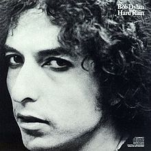

Toggle navigation
Bob Dylan Lyrics
Downloads
All Songs
All Albums
1960s
Bob Dylan (1962)
The Freewheelin' Bob Dylan (1963)
The Times They Are A-Changin' (1964)
Another Side of Bob Dylan (1964)
Bringing It All Back Home (1965)
Highway 61 Revisited (1965)
Blonde on Blonde (1966))
Bob Dylan's Greatest Hits (1967)
John Wesley Harding (1967)
Nashville Skyline (1969)
1970s
Self Portrait (1970)
New Morning (1970)
Bob Dylan's Greatest Hits, Vol. II (1971)
Pat Garrett & Billy the Kid (1973)
Dylan (1973)
Planet Waves (1974)
Before the Flood (1974)
Blood on the Tracks (1975)
The Basement Tapes (1975)
Desire (1976)
Hard Rain (1976)
Street-Legal (1978)
Bob Dylan at Budokan (1979)
Slow Train Coming (1979)
1980s
Saved (1980)
Shot of Love (1981)
Infidels (1983)
Real Live (1984)
Empire Burlesque (1985)
Biograph (1985)
Knocked Out Loaded (1986)
Down in the Groove (1988)
Dylan & the Dead (1989)
Oh Mercy (1989)
1990s
Under the Red Sky (1990)
The Bootleg Series Volumes 1-3 (Rare & Unreleased) 1961-1991 (1991)
Good As I Been to You (1992)
World Gone Wrong (1993)
Bob Dylan's Greatest Hits Volume 3 (1994)
MTV Unplugged (1995)
Time Out of Mind (1997)
The Bootleg Series Vol. 4: Bob Dylan Live 1966, The "Royal Albert Hall" Concert (1998)
2000s
The Essential Bob Dylan (2000)
Love and Theft (2001)
The Bootleg Series Vol. 5: Bob Dylan Live 1975, The Rolling Thunder Revue (2002)
The Bootleg Series Vol. 6: Bob Dylan Live 1964, Concert at Philharmonic Hall (2004)
The Best of Bob Dylan (2005)
Modern Times (2006)
Together through Life (2009)
2010s
Tempest (2012)
Hard Rain

Released: September 13, 1976
Length: 51:06
Producer(s): Don DeVito, Bob Dylan
Label: Columbia
By Bob Dylan
Recorded live on May 23, 1976 at
Hughes Stadium
in
Fort Collins, Colorado
Side 1
Maggie's Farm
One Too Many Mornings
Stuck inside of Mobile with the Memphis Blues Again
Oh, Sister
(original authors: Bob Dylan and
Jacques Levy
)
Lay Lady Lay
Side 2
Shelter from the Storm
You're a Big Girl Now
I Threw It All Away
Idiot Wind